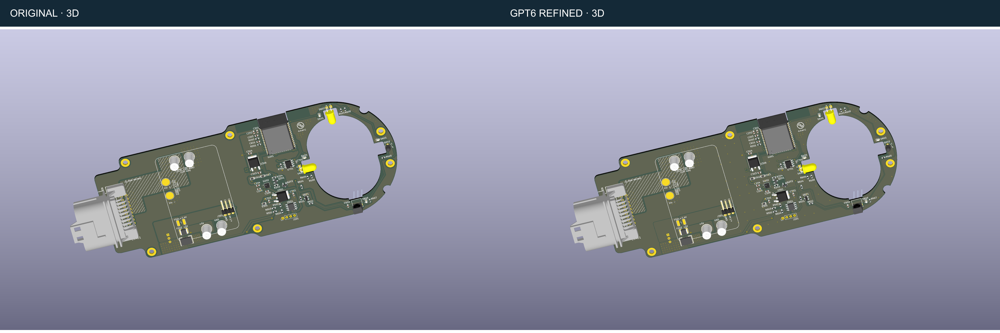

Rdrop Astra: original and GPT6 refined
KiCad 9.0.7 · 6 October 2026 · Two layers · Existing component placement retained.
0 DRC errors in both0 unconnected items40 added GND vias22 wider track segments
Ground area increased 12.0% on top and 8.4% on bottom. All 78 footprints, pad nets, outline and cutouts are preserved. The existing 80 warnings remain. 15 A peak / temperature-rise qualification is pending the load path and pulse details.
Read the full change and validation report · Verification records · Detailed changes
3D layout

Same camera settings and existing component models. Renderings are not thermal or enclosure-fit simulations.
The original project is unchanged. Layout geometry and configured design-rule checks were verified; electrical and thermal improvements have not been measured on hardware.